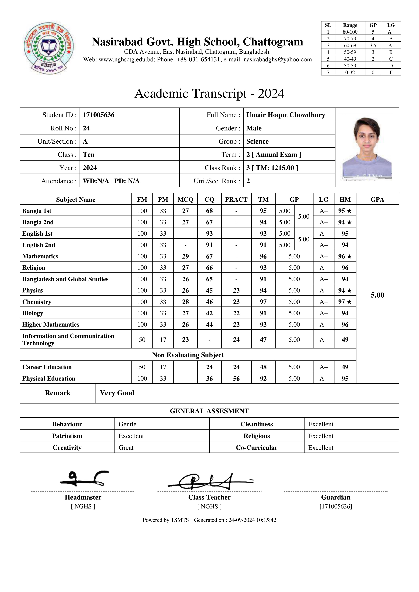

Umair Hoque Chowdhury
Records, Awards & Certifications
Academic records and achievements.
Academic record · Bangladesh
Secondary school transcript
Nasirabad Government High School

View full-size transcript ↗Umair Hoque Chowdhury
Academic records and achievements.
Academic record · Bangladesh
Nasirabad Government High School

View full-size transcript ↗